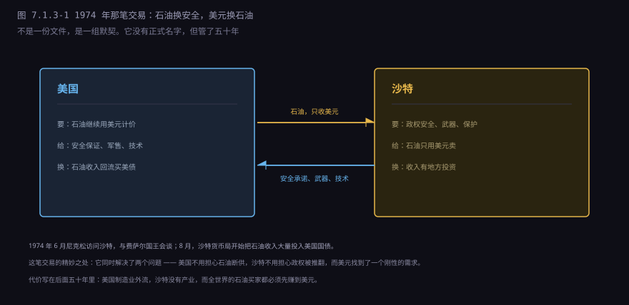
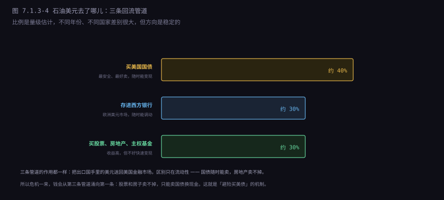
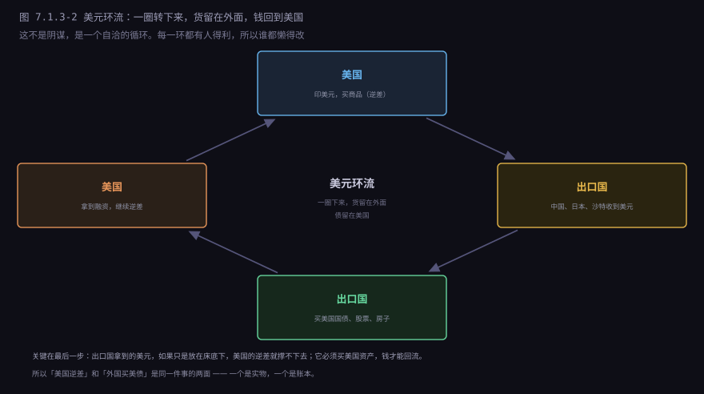
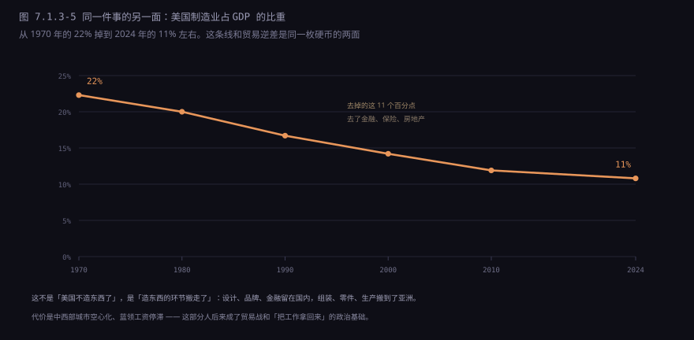
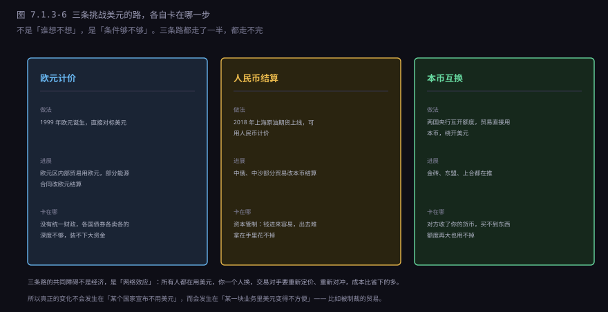
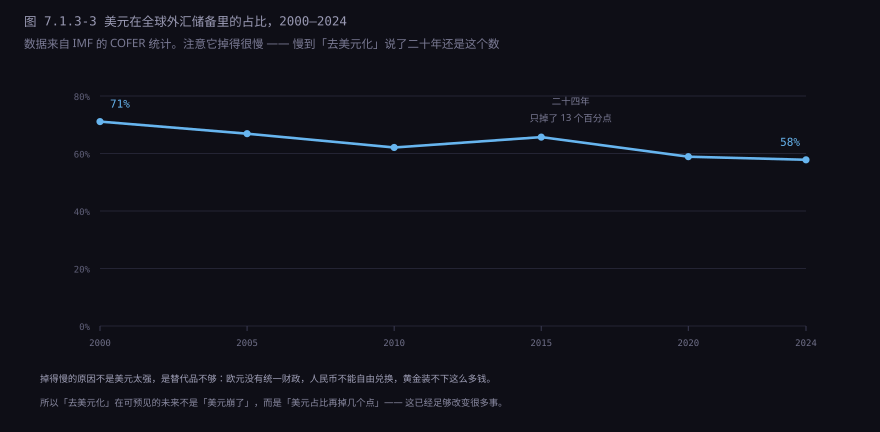

约 0.65 万字 · 6 张图 · 读完你能说清 1974 年那笔交易换的是什么、 美元环流为什么能转五十年、它的代价落在谁身上， 以及「去美元化」到底走到了哪一步
一张一百美元的纸币，成本大约几分钱。它能换一桶石油、一吨大豆、一台手机， 靠的不是纸本身，是别人愿意收。
那别人为什么愿意收？前面两节讲过，因为 1971 年之前它能换黄金， 1971 年之后不能了。按道理，不能换黄金的纸，信用应该大打折扣。 可美元没有垮，反而在 1970 年代之后变得更强势。
转折点是石油。1973 年之后，石油变成了全世界最刚性的需求—— 不管你产不产油，工业要转、汽车要开、化肥要造，就得买油。 而买油要用美元。
这就形成了一个刚性的美元需求：任何国家想买石油， 必须先弄到美元。怎么弄？出口东西赚。所以全世界都在向美国出口， 换回美元，再拿美元去买油。美元的需求不再来自「相信美国」， 而来自「必须买油」。
这个安排不是自然形成的。它是 1974 年一笔交易的产物。
1973 年 10 月 6 日，第四次中东战争爆发（以色列称「赎罪日战争」）。 埃及和叙利亚突袭以色列，以色列反击，美国向以色列紧急空运武器。
10 月中旬，阿拉伯产油国宣布对支持以色列的国家实行石油禁运， 同时把原油标价从每桶 3 美元左右一路提上去。 到 1974 年 1 月，油价站上了 11 到 12 美元——四个月涨了四倍。
后果立刻显现。美国的通胀率从 1972 年的 3% 涨到 1974 年的 11%， 加油站排队，工厂减产，股市腰斩。这就是「第一次石油危机」。
但对美国来说，这场危机里藏着一个机会： 既然全世界都必须买石油，那让石油用美元计价，美元就永远有人要。 这个想法不需要发明，只需要跟最大的产油国谈成。
最大的产油国是沙特。它有全世界最大的已探明储量，最大的闲置产能， 在 OPEC 里说话最算数。而且它有一个致命的弱点：安全。 它周边是伊拉克、伊朗、也门，王室需要外部保护。
两边需要的正好能换。
1974 年 6 月，尼克松访问沙特，与费萨尔国王会谈。 两个月后，沙特货币局（SAMA，也就是沙特的央行）与美国财政部达成了一系列安排。
这些安排没有一份公开的正式文本，后来的人是从双方的回忆录、 解密档案和实际行为里拼出来的。内容大致是：

沙特这边承诺两件事：石油只用美元计价和结算； 石油收入的大部分投回美国（国债、银行存款、公司股票）。
美国这边承诺：保障沙特的安全（军事保护、情报共享）、 卖武器（当时最先进的 F-15 后来也卖了）、 提供技术和人员培训。
这笔交易的精妙之处在于：它同时解决了双方最大的焦虑。 美国不用再担心石油断供（沙特有闲置产能，可以随时增产压价）， 沙特不用再担心被邻国吞掉（有美国背书）。
第二年，OPEC 全体成员国跟进，同意石油用美元计价。 从此，「买石油要先有美元」成了全球贸易的底层规则。
油价涨了四倍，产油国手里的钱一下子多得花不完。 1974 到 1981 年，OPEC 国家的经常账户顺差累计约四千亿美元 （不同口径的数字差别很大，有算到一万亿的，看是否包含全部石油出口收入）。
这些钱叫「石油美元」（petrodollar）。它们不可能都留在国内—— 沙特、科威特的人口只有几百万，花不掉这么多钱。所以绝大部分又流出去了。

第一条管道是美国国债。最安全、最好卖、随时能变现， 而且市场规模足够大，几百亿美元扔进去也不会砸出坑。
第二条是西方银行的存款，特别是「欧洲美元」市场—— 在美国境外流通的美元存款。伦敦是中心，不受美国监管，调拨方便。
第三条是直接投资：买美国公司的股票、买伦敦的写字楼、 买德国的工厂，以及后来规模巨大的主权财富基金（沙特 PIF、阿布扎比 ADIA、科威特 KIA）。
这三条管道加起来，效果是：石油美元转了一圈，又回到了美国。 产油国卖油拿到美元，买美国资产把美元送回去，美国拿到钱继续买油。
把这个过程放大到整个经济体，就是一个四步循环。

第一步：美国买商品，付出美元。美国的贸易逆差就是这一步的账面—— 2022 年美国商品逆差约 1.2 万亿美元，意思是它买了 1.2 万亿更多的东西。
第二步：出口国（中国、日本、德国、越南、沙特）拿到美元。 这些美元不会都花掉，因为出口国的储蓄率通常很高。
第三步：出口国拿美元买美国资产。买国债、买股票、买房地产， 或者存进美国银行。这一步是关键——如果它们不买，美元就会堆在外面， 美元会贬值，美国的进口会变贵，逆差自己就缩小了。
第四步：美元回流到美国，美国的利率被压低，消费和投资继续， 继续买商品。回到第一步。
这个循环有个漂亮的性质：每一环都有人得利。 美国得到了便宜的商品和低利率，出口国得到了就业和外汇储备， 产油国得到了安全，金融市场得到了流动性。 所以谁都懒得改——这就是它比任何条约都牢的原因。
但它有一个隐含的代价：美国的制造业。这一点下一节细说。
这个循环不是没人想打破。从 1970 年代到现在，每隔十年就有一轮「美元要完」的预言。 它没完，是因为四根柱子同时撑着：
| 支柱 | 内容 | 替代品为什么不行 |
|---|---|---|
| 安全 | 美国给沙特、日本、欧洲提供军事保护 | 没有第二个国家能提供全球安全 |
| 市场深度 | 美国国债市场二十多万亿美元，随时能进出 | 欧元债市分裂，中国债市不开放 |
| 计价惯性 | 石油、黄金、大宗商品都用美元报价 | 换货币要重谈合同、重做对冲 |
| 没有替代 | 欧元没有统一财政，人民币不能自由兑换 | SDR 只是个记账单位，不能用于交易 |
四根柱子里，「安全」这根最不显眼，但最结实。 沙特之所以愿意用美元计价，不是因为喜欢美元，是因为美国保护它的政权。 日本、韩国、欧洲同理——它们的国家安全依赖美国，经济上就很难彻底脱离美元体系。
这也是为什么「去美元化」喊了这么多年，真正动起来的都是被美国制裁的国家 （俄罗斯、伊朗、朝鲜）。没有被制裁的国家，没有动力付那个转换成本。
不过这根柱子在过去十年里变了一半：美国自己变成了产油国。
2008 年之后，水平钻井加水力压裂把页岩油开采成本打了下来。 美国原油产量从每天五百万桶涨到一千三百万桶， 2018 年超过沙特和俄罗斯成为世界第一，2020 年变成石油净出口国—— 这是二战之后的第一次。
这件事改变了石油美元的第一层逻辑。1974 年的逻辑是「美国要买油， 所以要让油用美元结算」；现在美国不怎么买了，这一层自然弱化。 但第二层逻辑反而更重要了：定价。
全球石油的现货和期货价格，还是在纽约商品交易所（NYMEX）和伦敦洲际交易所（ICE）定。 这两个市场的合约用美元报价、用美元交割，全球的买家卖家都盯着这两个价格做决策。 从「结算货币」变成「定价货币」，黏性其实更强—— 结算可以换，定价基准换不了，因为换了就没有流动性。
环流让美国得到了便宜的商品，代价是生产这些商品的工厂搬走了。

1970 年，美国制造业占 GDP 的 22%，雇了两千万人。 2024 年，这个比重是 11% 左右，就业人数掉到一千二百多万。 与此同时，金融、保险、房地产的占比从 15% 涨到 20% 以上。
这个变化的经济逻辑很清楚：美元被高估，制造业就没有竞争力。 因为全世界都要美元（买石油、做储备），美元的需求被人为抬高， 汇率就偏强。汇率强，美国造的东西在国际上就贵，卖不动。 于是工厂搬到汇率低的地方，比如中国、越南、墨西哥。
这不是「美国人懒了」，也不是「中国偷了工作」。 它是一个结构性结果：你选择当储备货币国，就得接受制造业外流。 这一点特里芬在 1960 年就说过，只是当时说的是「美国必须让美元流出去」， 没明说流出去的代价是工厂。
代价落在具体的地方：俄亥俄、宾夕法尼亚、密歇根这些「铁锈带」州， 工厂关门，城市空心化，蓝领工资三十年不涨。 这批人后来成了 2016 年特朗普当选、2018 年贸易战的社会基础。 从这个角度看，贸易战不是外交政策，是国内政治的回声。
环流的另一面是债务。出口国买美国资产，买的主要是国债—— 这等于把钱借给美国。借得越多，美国的债务越大。
1980 年，美国联邦债务约 9000 亿美元，占 GDP 的三成。 2024 年，这个数字超过 35 万亿美元，占 GDP 的 120% 以上。 其中外国投资者持有大约 8.5 万亿，日本一万多亿，中国七千多亿。
债务本身不是问题，问题是利息。2024 财年， 美国联邦政府的净利息支出超过一万亿美元，比国防预算还高。 这笔钱不产生任何产出，只是付给债权人。
这就形成一个越来越紧的循环：债务越大，利息越高； 利息越高，赤字越大；赤字越大，债务越大。 要打破它，要么加税，要么减支出，要么让通胀把债务「吃掉」一部分 ——三件事在政治上都很难。
所以「美元环流」不是免费的。它给美国带来了便宜的商品和低利率， 也带来了空心化的制造业和不断膨胀的债务。 这两件事在五十年里是慢慢积累的，慢到没人着急，直到它变成政治问题。
上一节讲过 1960 年的特里芬难题：世界要更多美元，美国就得逆差； 逆差越多，兑换承诺越不可信。
1971 年之后，黄金约束没了，但这个难题没有消失，只是换了一个形式：
软约束的好处是不会突然崩——没有一扇窗可以关，也没有一个日子可以记。 坏处是它不会自己修复：信心是靠「别人还信」维持的， 而「别人还信」这件事没有客观标准，只能靠观察。
所以今天的美元体系不会像 1971 年那样「某一天突然结束」。 它会慢慢地、一点一点地松动：储备占比掉几个点，某些贸易改成本币， 某些国家把美债换成黄金。这个过程可能持续几十年，中间还会有反复。
在讲这三条路之前，得先看清一个比货币更难换的东西：单证。
一船石油从沙特运到中国，不只是「付钱」这么简单。它涉及一整套单据： 提单（证明货在船上）、信用证（银行担保付款）、保险单（船和货的保险）、 原产地证、质量检验报告。这一整套东西，全部以美元计价， 而且大部分环节由西方机构把着。
比如信用证，通常由一家美国银行开立或保兑；保险走伦敦的劳合社市场， 再保险也在伦敦和纽约；出了纠纷，仲裁地常常是伦敦或纽约。 所以就算买卖双方说好「用人民币结算」，单证体系还是美元—— 银行看到人民币计价的提单，第一件事是要不要给它做保兑。
这就是「网络效应」的具体形态：不是一种货币换另一种货币， 是一整套习惯、机构、法律和单据换另一套。 这套东西建了几十年，换的成本高到没人愿意先动。
看清这一点，再看下面三条路，就知道它们难在哪了。

第一条：欧元计价。1999 年欧元诞生，理论上是最有资格的挑战者—— 欧元区的经济规模和美国相当，贸易量更大。伊拉克在 2000 年宣布石油改用欧元结算， 委内瑞拉也跟着表态。
但欧元有两个硬伤：没有统一财政（各国的债券各卖各的， 德国的债和希腊的债不是一个东西），债券市场不够深 （高流动性的欧元债券规模远小于美国国债）。所以各国央行存欧元， 还是得买德国国债，容量有限。2003 年伊拉克战争后，伊拉克的石油结算又改回了美元。
第二条：人民币结算。2018 年 3 月，上海原油期货上线， 可以用人民币计价和交割。这是第一个在主要石油进口国推出的、非美元的原油期货。 中俄贸易的本币结算占比在 2023 年超过九成，中沙之间也有部分本币结算。
障碍是资本管制：人民币不能自由兑换， 外国卖家收到人民币，想换成美元或者买别的资产，手续麻烦。 「拿在手里花不掉」是人民币国际化最大的瓶颈，而这个瓶颈是三元悖论的必然结果—— 要管住资本流动，就不能让货币自由兑换。
第三条：本币互换。两国央行互开额度，贸易直接用本币结算，绕开美元。 中国和三十多个国家签了互换协议，金砖、东盟、上合都在推本币结算框架。
障碍是对方拿了你的货币，买不到东西。比如泰国收了人民币， 它能用人民币买中国的商品，但买不了沙特的石油、德国的机器。 额度再大，如果对方没有东西可买，这个额度就用不掉。
说了这么多挑战，实际数据是什么样？

这个数字值得仔细看。第一，58% 仍然是第二名的三倍多 （欧元大约 20%）。第二，下降的速度很慢： 平均每年半个百分点，而且不是直线下降，中间有反复。 第三，掉的那部分主要去了「非传统储备货币」 （澳元、加元、韩元、人民币），不是去了某一个主要对手。
所以「去美元化」的准确描述不是「美元要崩了」，而是 「美元还是第一，但它的份额在慢慢被稀释」。 这个变化足够改变很多事——比如美国的融资成本会上升， 制裁的效果会减弱——但它不会在短期内颠覆整个体系。
判断这件事的进度，看一个指标比看新闻可靠： 美元在全球支付中的占比（SWIFT 每月公布）。 这个数字常年在 40% 到 50% 之间，比储备占比更稳定。 它衡量的不是「大家想不想用美元」，而是「实际交易里用的是什么」。
石油美元和环流撑起了五十年的全球贸易，但它有四件事做不到：
| 它做不到 | 原因 | 现实表现 |
|---|---|---|
| 保住美国制造业的就业 | 储备货币必然强势，出口必然吃亏 | 铁锈带空心化，蓝领工资三十年不涨 |
| 阻止债务累积 | 环流本身就是借债机制 | 联邦债务 35 万亿，利息超过国防 |
| 让制裁只伤别人 | 美元被武器化，别人就会想绕开 | 被制裁国搞本币结算，反而加速去美元 |
| 让所有人同时满意 | 特里芬难题的结构性矛盾 | 美国要逆差，别人要顺差，长期不可持续 |
第三条值得多说一句。美元的优势之一是可以制裁： 只要一笔交易走美元清算，美国就能看到、就能拦。 这让制裁非常有效——伊朗、俄罗斯被踢出 SWIFT 之后，贸易立刻受重创。
但每次制裁都在给对手一个理由：「不能把命脉放在别人手里」。 俄罗斯 2014 年之后大幅减持美债、增持黄金、建自己的支付系统（SPFS）， 2022 年被制裁后，这套备用系统真的用上了。 制裁越频繁，去美元化的动力越强——这是这套体系的自毁机制。
到这里，「一张纸凭什么换货」可以回答了： 不是因为它值钱，是因为有一种东西全世界都必须买，而它只收这张纸。 这个安排靠 1974 年的一笔交易建立，靠四根柱子维持， 代价是制造业和债务，而它现在正在被自己的武器（制裁）一点点磨损。
下一节讲这套体系的技术骨架：一笔跨境汇款到底怎么走， SWIFT 和 CHIPS 分别管什么，为什么「报文」和「清算」是两件完全不同的事。 那是这一部从「钱」转向「系统」的地方。